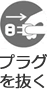

エアコン本体および無線LAN接続アダプターの取扱説明書に記載されている安全上のご注意をお守りのうえ、下記をよくお読みいただき、正しくお使いください。
お使いになる人や、ほかの人への危害、財産への損害を未然に防止するため、必ずお守りいただくことを次のように説明しています。

エアコンは、工事設計認証を取得している無線設備を内蔵しており、免許を申請する必要はありません。また、日本国内でのみ使用できます。
● 万一、エアコンから「他の無線局」に対して電波干渉が発生した場合は、すみやかに本製品の使用を停止し、遠隔操作に関する問い合わせ窓口へご相談ください。
エアコンが金属で囲まれていたり、無線LANルーターとの間に金属や鉄筋コンクリートなどの電波を通しにくい物がある場合には、ノイズを受けたり到達距離が短くなるなどで通信できないことがあります。
エアコンは下記の機器などから電波の影響を受けることがあります。できるだけ離してご使用ください。